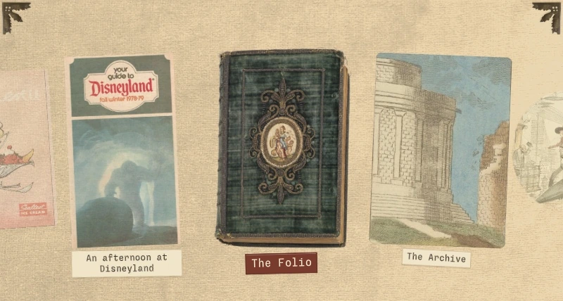
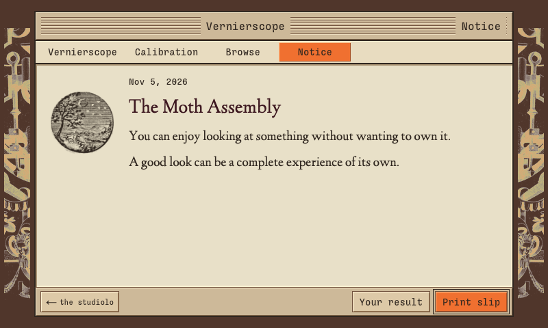
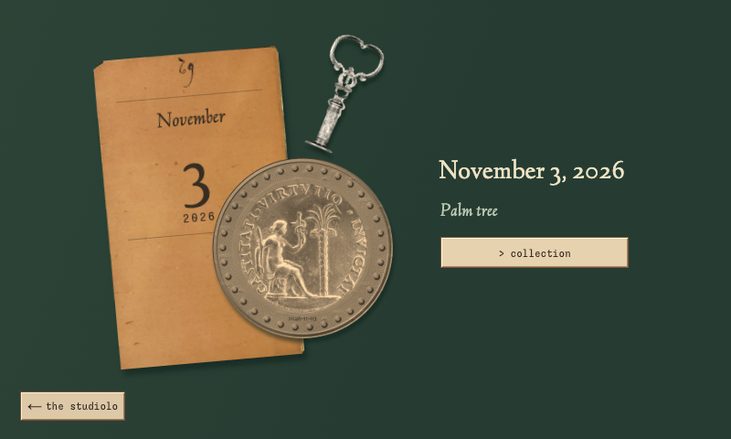
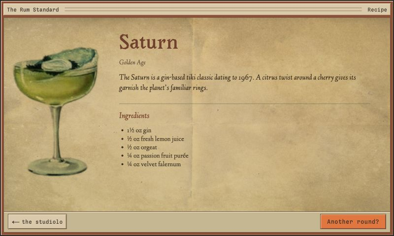
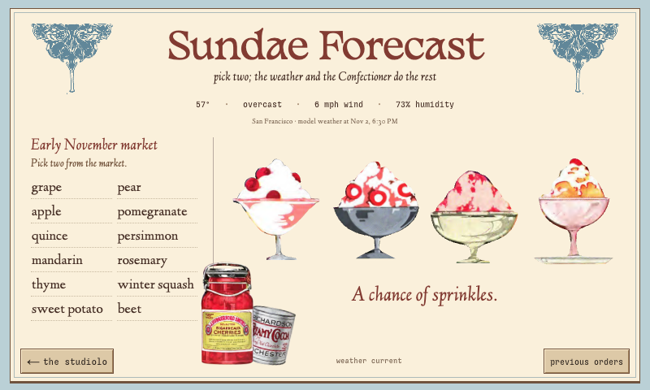
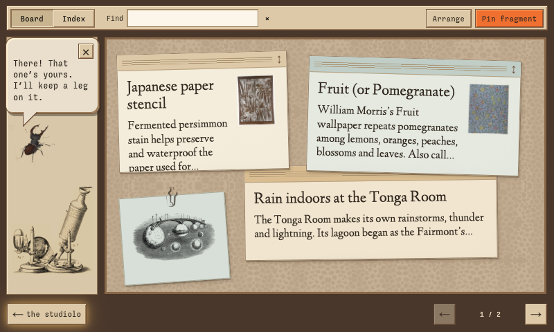
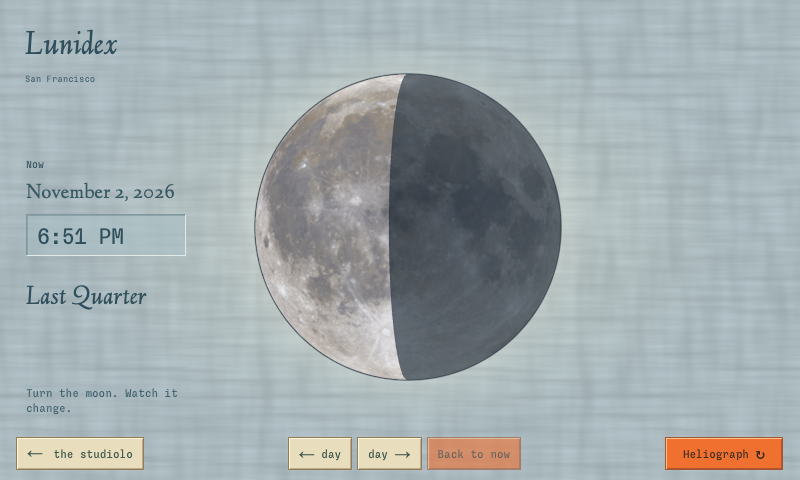

Halyx
A handmade computer in a briefcase, with a few things rattling around inside.
The odds and ends have promoted themselves to software. The fountain has opinions now, and the coins remember your day.

Take a short visitThe Vernierscope
The Vernierscope has the appeal of a horoscope, with eight temperaments of its own, each with particular pleasures and contradictions. A few choices of words and symbols lead to a short personal notice: the satisfaction of getting one small detail right, the discovery that rearranges an afternoon, or the wish to be known without giving everything away.


The Mint
Answer questions about your day, and the Mint uses your responses to determine a coin’s design, drawing on historical medal imagery. Each coin is saved with its date and answers, so you can reopen it later and see the day that produced it.


The Rum Standard
Circle your preferences on an illustrated drinks menu. It filters the recipe collection to match your choices, then uses your recommendation history to vary what it serves. Each drink comes with its recipe and a note about its origins.


Sundae Forecast
Choose two seasonal ingredients. Live weather shapes the sundae. For each order, a small language model running on the Pi decides what to do with the second ingredient.


Folio
Folio holds notes and saved excerpts on a pinboard of movable slips. When you file something from Signal, a language model running on the Pi can condense the excerpt into a short note. Its source stays attached, and your arrangement is saved for the next visit.


Heliograph & Lunidex
A historical astronomical diagram adapted into an interactive sun-and-moon wheel. It calculates sunrise and sunset for San Francisco and the moon’s phase for the date you choose.


More inside
The Matinal
A morning paper assembled from weather and air-quality feeds, incoming headlines, and a seasonal produce calendar. Turn it over for NASA’s astronomy image and its accompanying explanation.
The Archive
A searchable copy of Wikipedia stored on the Pi, with an interface built from historical encyclopaedia illustrations. Articles and their links work offline.
Signal
Articles from selected RSS feeds arrive as telegrams. Open one to read the article and its images, then file an excerpt in Folio with its source attached.
I built the interface as a set of web applications running on a Raspberry Pi with Linux. Local services handle the collections, incoming feeds, and language model; public-domain artwork supplies the menus, diagrams, and objects you use to navigate.